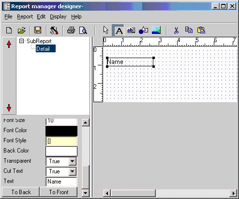

You can drop labels by clicking the label button and then clicking the detail section area. Select the item you dropped and alter the text property.

You can select fields by clicking the expression button, a list of fields will show. Select a field and drop it to the detail section beside the label.
After going to preview the report section try dropping some fields, changing font, and some drawing items...